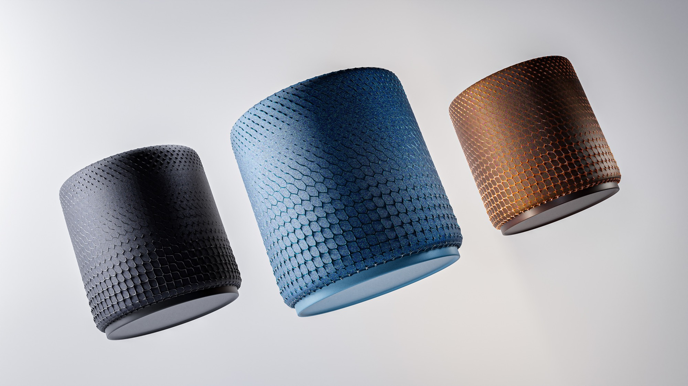
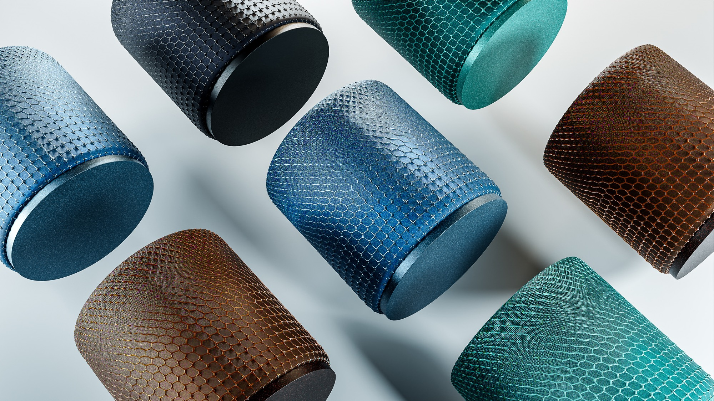
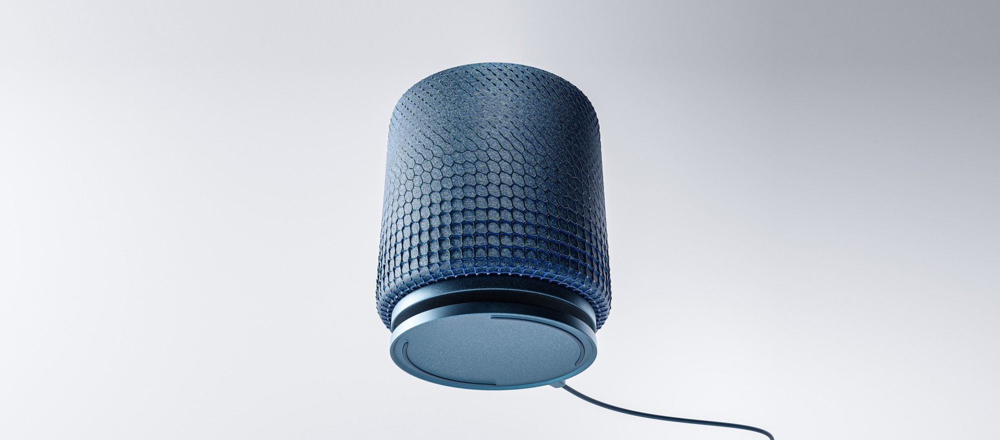
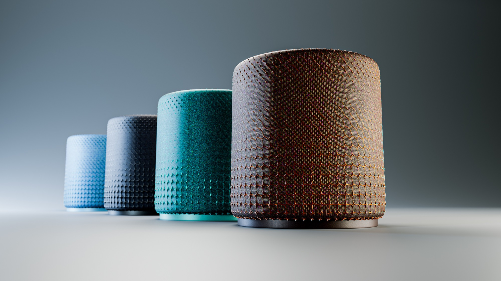

Concept · Self-initiated · 2024
A speaker.
Designed for mobility.
My aim was to explore how parametric patterns could be incorporated with textiles through 3D printing.


The basics
Focusing on the basics.
The challenge was to orchestrate all kinds of variables including UI interactions, light, and haptic feedback, while exploring how these could all work together.

Interactions
Capturing core interactions
— and curating every single frame to make sure it aligns with the overall look & feel was crucial.

Charge. Play.